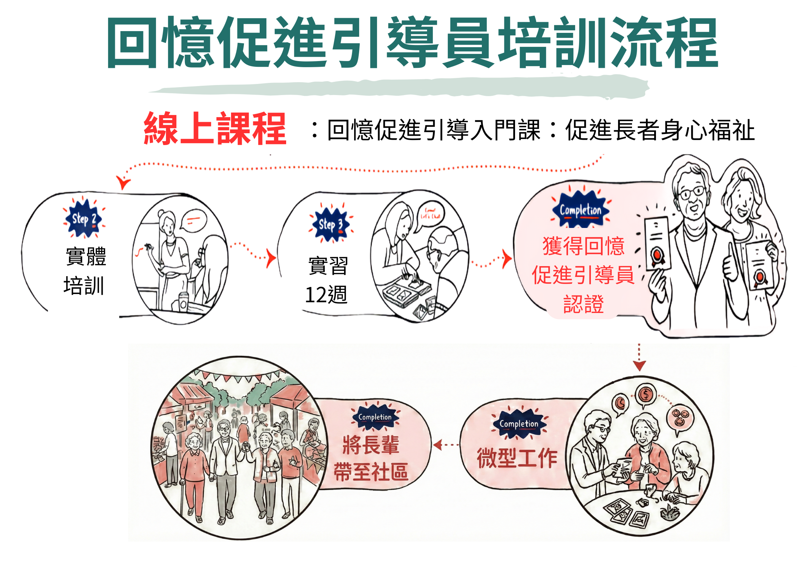
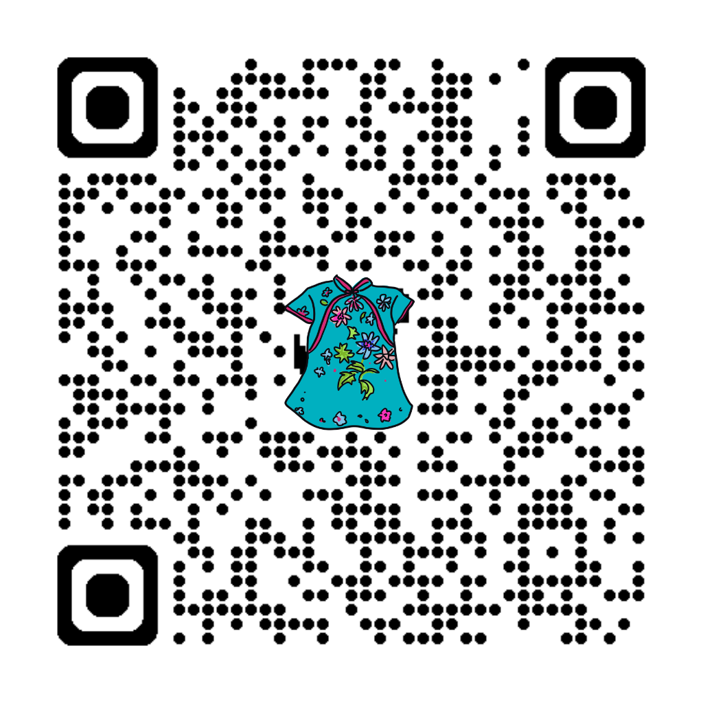

台灣已邁入超高齡社會，獨居與社會孤立風險同步上升。我們發現初老夥伴往往不願進入傳統機構，而社區據點也面臨如何發展特色，並藉由懷舊活動吸引長輩持續參與的挑戰。
科學實證：
研究發現，長者進行懷舊與回憶對談時，大腦前額葉皮質血流量高於一般日常對話，流入腦中血液量增加高達80倍！這可大幅協助長者增加互動、提升情緒與認知刺激。
一次串起，建立永續的社區照護生態系
發展社區照護
懷舊據點的亮點與特色
透過回憶促進身心健康
重拾生命價值感
發揮社會新力量
創造有酬志工機會
提高長輩黏著度
促進世代和諧共融
星展銀行基金會協助新加坡社會科學大學 (SUSS) 、臺北醫學大學 (TMU) 及香港嶺南大學(LU)設立了「區域回憶促進資源中心 (RH)」，提供教育訓練、經費與資源補助、國際共構與永續發展的支持。
新加坡社會科學大學 老年學課程負責人
體驗式學習中心的高級研究員，領導老年學課程、社區參與和研究工作，重點關注老年人學習指南、失智症懷舊回憶、口述歷史計畫、數位共融、健康老化以及世界衛生組織 ICOPE 框架。
臺北醫學大學 副教授
擁有十餘年長者社區中心管理經驗。率先將設計思考和懷舊口述歷史應用於長者照顧與服務學習領域，於2015年創立台灣首個由大學主導的社區活動中心，專長於創新教學與研究。
臺北醫學大學跨領域學院 副院長
生醫設計師和特殊教育教師，致力於透過服務設計促進社會融合。擁有超過8年的長者中心管理經驗與多項針對社會議題的懷舊與照顧產品專利，專長於教學設計與跨領域教學。
完整的培訓機制，招募、培訓、推廣一站式模組架構

完成必要的線上課程以建立懷舊與回憶引導的基礎知識，涵蓋引導原則、5大核心素養與能力 (5 RECs) 及 4Ws 活動設計方法。
參加為期兩天的實體培訓課程，透過角色扮演與模擬懷舊情境，獲得實踐經驗與有效溝通技巧。
完成 12 次實作以應用所學懷舊引導技能，成功完成所有步驟後即可獲得「回憶引導員證照」!
讓長輩被理解，讓社區更有溫度，讓我們老的起。
期待把懷舊與回憶促進變成社區的日常支持：更多據點、更多引導員、更多長輩受益。若您對計劃有興趣，或想成為我們的合作夥伴，歡迎隨時與我們聯繫！
李家豪 Frank 專案經理
聯絡電話：(02)2736-1661 分機2663
聯絡手機：0912-479-564
Mail：s07295@tmu.edu.tw
LINE ID：lichiahao.frank
WhatsApp：https://wa.me/886912479564
掃描加 LINE 專人服務

掃描填寫合作意願